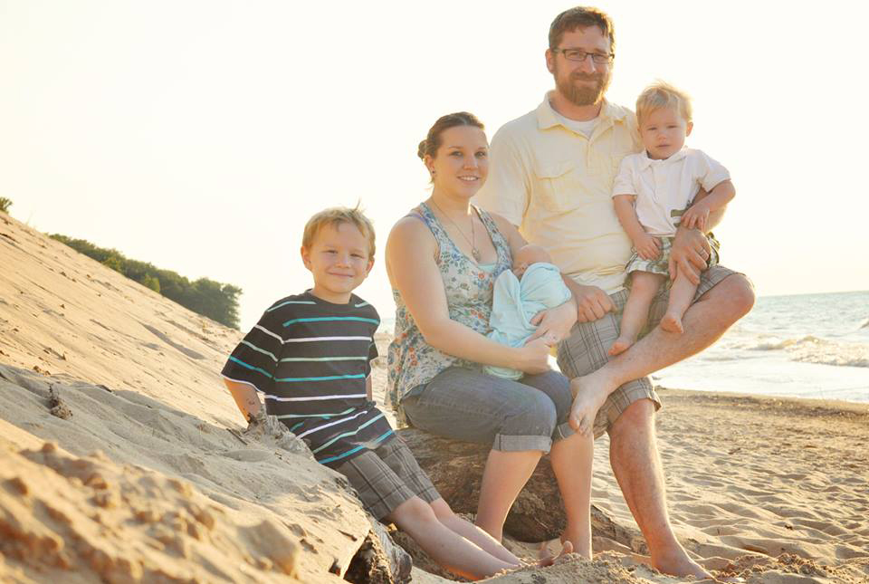

I'm Kate, a stay at home mother of three beautiful boys, and wife to a wonderful, supportive husband. I happen to have a crazy passion for photography that sometimes consumes all of my free time. I enjoy photography, traveling, animals, and spending time with my family and friends. I also enjoy baking, and making crafts/props when time permits. I've always been quite into photography, and even in elementary school was always known to have a camera in hand.  Cheap, but it always did the trick at preserving memories I still cherish to this day. I did not start to put my soul into it more until the birth of my first son in 2006. I realized then just how precious a photograph is, they grow and change SO quickly. I started to get more into portrait shooting then started to teach myself Photoshop in my spare time. As of 2006 I have shot events at the Morris Theater, and Civic auditorium in downtown South Bend, several weddings, portrait & nature photography. I'm very rarely caught without my camera in hand. I specialize in maternity & newborn photography, but love to keep an open mind to shooting other types of sessions. I am a natural light photographer and in most cases do not use flash in my portraits. I have a new found passion for concept photography, which has been taking dark, whimsical dream-like scenes and bringing them to life. There is something about creating something from nothing, piece by piece, with my own hands to make my visions come alive. I love the endless possibilities Photoshop has brought to my images to really give them another element of personality. I like imaginative images that not only draw me in with my eyes, but also my mind.
Basically I enjoy taking every day, or not so every day, moments and making them immortal no matter if they are staged or candid. I love the way taking a simple photo is a documentation of our life being stopped in time. When I shoot sessions I like to try to design my sets or shooting technique based on my clients individual style to capture the perfect moments because everyone is unique as the images I wish to have come out of my camera.
The goal isn't to live forever, it's to create something that will.- Unknown I don’t consider myself an artist, just a dreamer.- Unknown If you would like to book a session or event please contact me for more information & availability. Thanks, I look forward to working with you soon! Kate Cundiff Digitalmeow7@yahoo.com